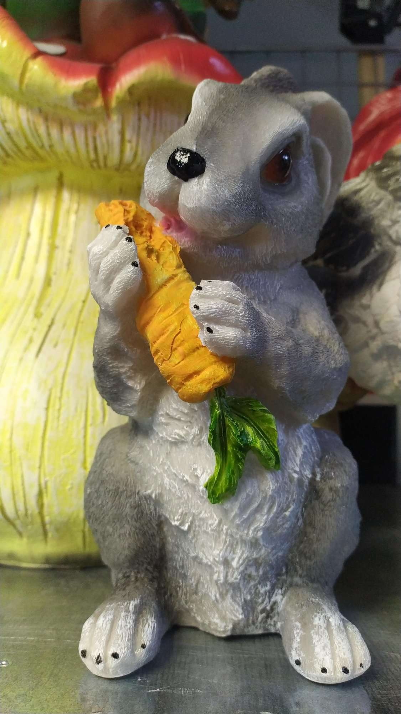
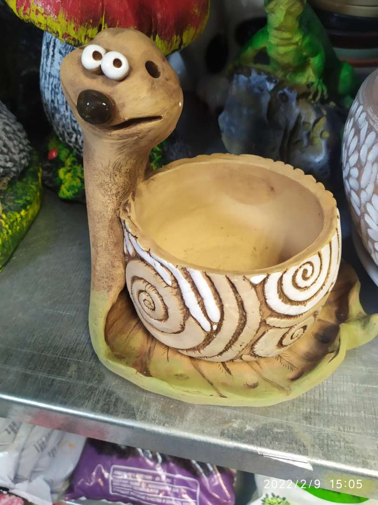
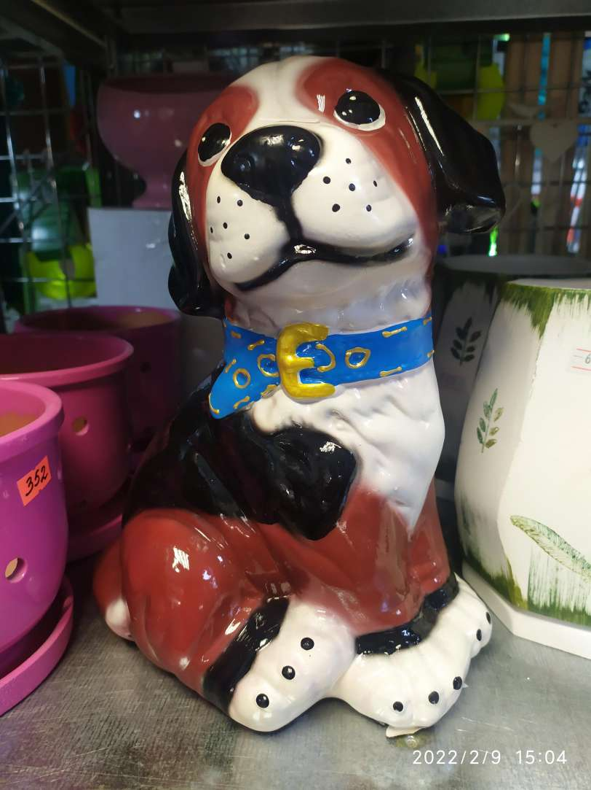
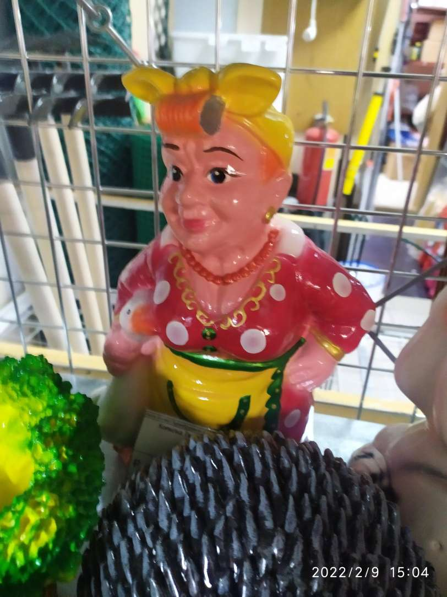
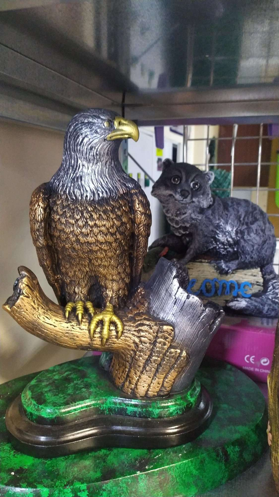
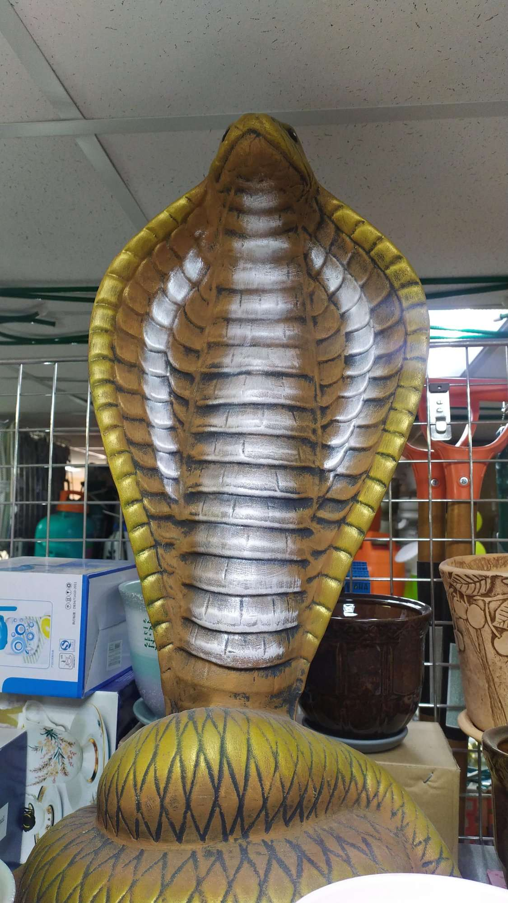
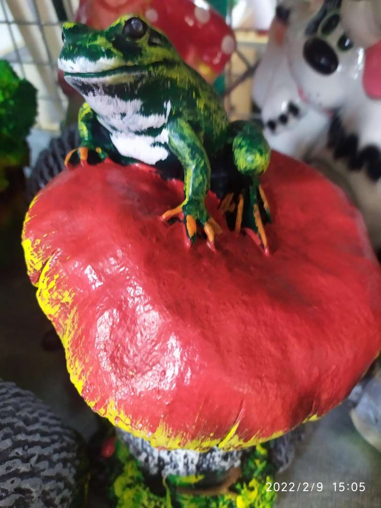
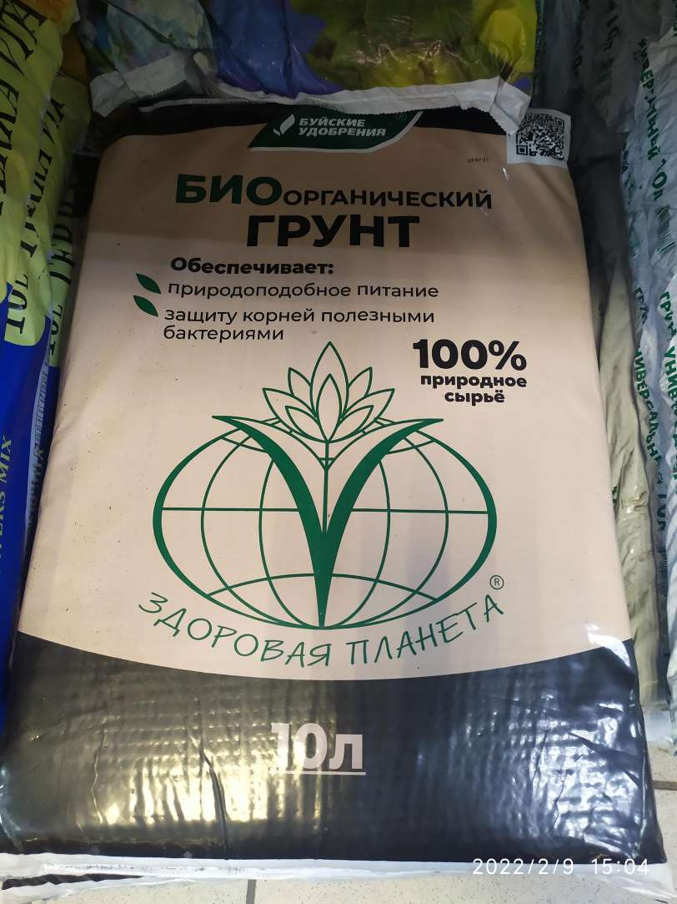

Магазин уродливых подарков
День начинался нормально и ничего не предвещало беды, но говорят коты способны находить странное. Наш кот не оказался исключением. От скуки и грусти, а также от нужды поправить шевелюру, Кот собрался к цирюльнику. Если говорить честно, то цирюльня как бы тут сильно и не нужна.
Хотя может быть мы все ошибались....
В общем, не долго думая, Кот отправился сбривать шерсть лишнюю. Что из этого вышла нам еще предстоит увидеть. Будем надеяться на его голове все вынлядит лучше, чем то, что мы вынуждены были увидеть дальше.
 И если обдолбанный в край заяц, с вылупленными краснющими глазами был еще "ничего", то червяк раздавленный кокосом повергал в уныние. Глаза бедного червячка молили :"Добейте меня!"
Вы только посмотрите на собаку чудом не погибшую под рукой художника-самоучки, а уж про женщину неопределенного возраста и говорить не хочется! Ее явно помотала жизнь и художник оформитель это отлично передал.
 Отдельно в этом паноптикуме стоит скульптурная компизиция "Слепой орел и его неразлучный друг повидавшие некоторое дерьмо". Есть определенное подозрение, что орел был одной из первых фигур до которой добрался художник. И именно поэтому орел лишил себя сам зрачков, чтоб не видеть всего этого дерьма.
Меньше всех досталось кобре и лягушке. Видимо оформитель питает какую-то слабость к земноводным
 Пытаясь разобраться, что за цирк уродцев Квакстона нашел Кот, было выясненно, что Кот обнаружил фигурки для сада на одной из полок магазина. И не приминул поделиться ими с нами. Заметив, что "весь чат поместился на одной полке". То, что Кот кого-то назвал земляным червяком из этой коллекции, это еще ничего, потому что после он уточнил, что кто-то в нашем чате вообще : ....
Не могу определенно сказать на кого намекал Кот, но думаю, что в ближайшее время это выяснится. В видеозвонке.